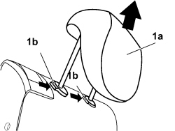

7050B10 ERAR SEAT HEAD RESTRAINT (ONE), LEFT OR RIGHT - R.R.
- Path
- Procedures > 70 FITTINGS > 7050 REAR SEATS > 7050B REAR SEAT HEAD RESTRAINT/ARMREST > 7050B10 ERAR SEAT HEAD RESTRAINT (ONE), LEFT OR RIGHT - R.R.
- Kind
- repair procedure (removal / refitting; the operation number is the code)
- Applies to
- all engines; all production periods
- Interactive page
- https://sloeber94.github.io/elrnDB-fCrm/en/#/194001153
Applies to: all engines; all production periods
 Removing
Removing
 Refitting
Refitting1. Raise the head restraint (1a) until it is in the end of travel position, press the buttons (1b) and, at the same time, release the head restraint from the seat and remove it.

Applies to: all engines; all production periods
Refitting
Removing- Check that the head restraint is not damaged.
- Press the retainers and fit the head restraint.
- Check that the head restraint is working.
Topics that link to this page (7)
- 7050B08 GUIDE BUSH FOR HEAD RESTRAINT (ONE) FOR REAR SEAT - R.R
- 7050B30 REAR SEAT CENTRE ARMREST - R.R.
- 7050D35 LEFT REAR SEAT BACKREST COVER (TWO SEATER) - R.R. WITH BACKREST REMOVED
- 7050D37 RIGHT REAR SEAT BACKREST COVER (SINGLE) - R.R. WITH BACKREST REMOVED
- 7050D50 TRIM FOR ONE HEAD RESTRAINT, LEFT OR RIGHT FOR REAR SEAT - R.R.
- 7050D52 TRIM FOR CENTRE REAR SEAT HEAD RESTRAINT - R.R.
- 7065B18 CENTRE REAR SEAT BELT - R.R.